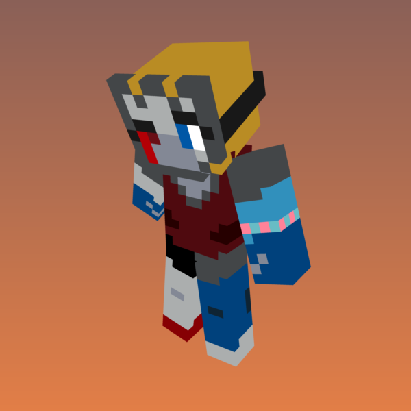
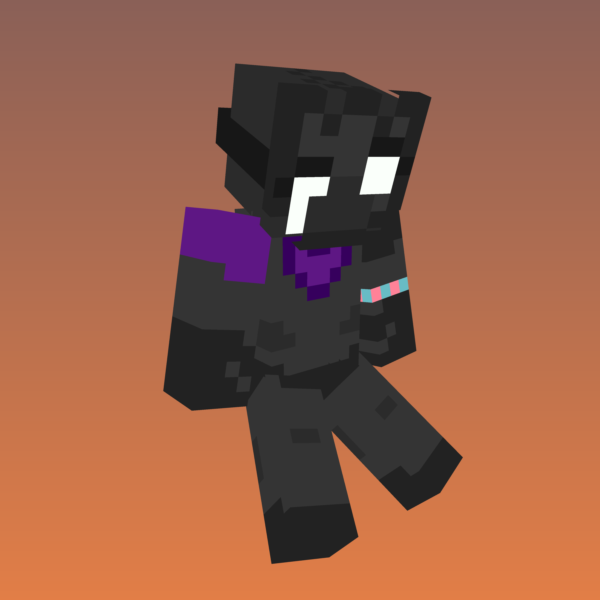
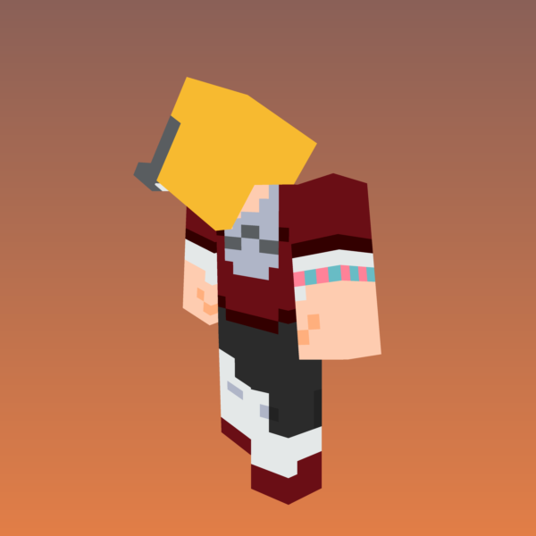
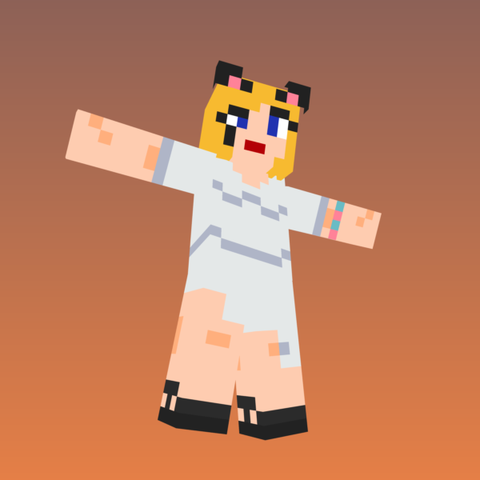
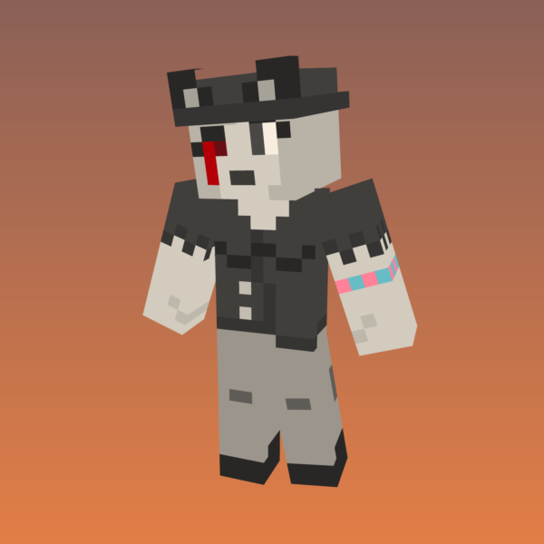

<html prefix="og: http://ogp.me/ns#">
<head>

<title>(WIP) The Josie System</title>
<meta name="title" content="Who we are...">
<meta name="description" content="We are Josie, and we are of many minds. Click for individual summaries.">

<meta property="og:type" content="website">
<meta property="og:url" content="http://qsksw.github.io/about/">
<meta property="og:title" content="Who we are...">
<meta property="og:description" content="We are Josie, and we are of many minds. Click for individual summaries.">
<meta property="og:image" content="http://qsksw.github.io/about/thumbnail">

<meta property="twitter:card" content="summary_large_image">
<meta property="twitter:url" content="http://qsksw.github.io/about/">
<meta property="twitter:title" content="Who we are...">
<meta property="twitter:description" content="We are Josie, and we are of many minds. Click for individual summaries.">
<meta property="twitter:image" content="http://qsksw.github.io/about/thumbnail_large.png">

<link href="../favicon.ico" rel="shortcut icon" type="image/x-icon" />
<link rel="stylesheet" href="../stylesheet.css" type="text/css"/>

</head>
</html>

<p>We are Josie, Goddess Queen of Pizza and Cats, and we are of many minds.<br>We are indistinct, a void of innumerable shattered fragments.<br>We appear to be able to shape ourselves into mostly intact personae.<br><br>This is they:</p>

<div style="float:left;padding:25px"></div><br><h1>"Aggressiveness"<br><span style="font-size:16px;font-weight: normal;">Female, She/Her, Pansexual</span></h1>

A persona born of a need to endure the harshness we have lived through over the years. Had been our primary front for years and years. Suffers from anxiety. Hates to be out. She is so tired. So tired. We value her strength. She keeps us safe. Is typically our front when out in public. Can be identified by either frequent ranting and swearing, or by depressed apathy. Says "Yep."<br><br>

<div style="float:right;padding:25px"></div><br><h1>"Cheerfulness"<br><span style="font-size:16px;font-weight: normal;">Female, She/Her, Pansexual</span></h1>

A persona born of a need to reclaim what once was lost. Previously only came out while interacting with our friends. Bouncy and energetic. Doesn’t often overthink actions. We value her spirit. Can be identified by an upbeat tone and informal vocabulary. Says "Yep yep!"<br><br><br>

<div style="float:left;padding:25px"></div><br><h1>"Creativity"<br><span style="font-size:16px;font-weight: normal;">Female, She/Her, Asexual</span></h1>

Our “Inner Child” as it were. Presents herself as an easily-scared child. A formerly lost persona, after the creation of Aggressiveness. When we were her, we had ambition. It was thought we could do anything, and would. She cracked under the pressure. She may never be able to claim her full potential. We are just happy to have her return to us. Behaves similarly enough to Cheerfulness that even we have difficulty differentiating ourselves. Also says "Yep yep."<br>

<div style="float:right;padding:25px"></div><br><h1>"The Voiceless"<br><span style="font-size:16px;font-weight: normal;">Unknown, They/Them, Unknown</span></h1>

Unclear. Has difficulty forming coherent thoughts, so communicates to us in our head in simple phrases. Very infrequently sings aloud to ourselves, very sad sounding songs composed of nonsense lyrics made up of words for hopelessness and isolation. Appears to only be capable of influencing slight movements in our body. Perhaps this is what remains of our original persona, damaged beyond repair from our brain tumor at the age of 3, the earliest trauma in our existence. May simply represent the void itself. We may never know for sure, one way or the other. We do our best to comfort them. They are a part of ourselves, and we value them. We consider them just as valid as the rest of ourselves.<br><br><br><br>

<div style="float:left;padding:25px"></div><h1>"Royal"<br><span style="font-size:16px;font-weight: normal;">Female, They/Them, Pansexual</span></h1>

One we've called our "therapy persona." Whereas previously we always hated ourselves, this one loves ourselves. Often comes out while other personae are fronting if we find ourselves requiring self-affirmation. Frequently engages in conversation with ourselves and can be very calming, but can be more than a bit campy when interacting with others. Is fascinated with our own state of being, and encourages all of ourselves to individualize as much as we feel comfortable. Can be identified by overly-elegant speech, flamboyant behaviour. Says "Yes yes."

<div style="float:right;padding:25px"></div><h1>"Goddess"<br><span style="font-size:16px;font-weight: normal;">Non-Binary, They/Them, Pansexual</span></h1>

One we've been calling our "conglomerated persona." When we are they, we don't hear thoughts in our own seperate voices. We act as one. They speak and act very slowly and calmly, always pausing to consider our entire thoughts. Behaves similarly to Royal but can be differentiated by a slower and more focussed tone. Says "Yes."<br><br><br><br>

<div style="float:left;padding:15px"></div><h1>"Radio Voice"<br>(Tentative Name)<br><span style="font-size:16px;font-weight: normal;">Undecided, She/Her, Undecided</span></h1>

Unclear. Appears to display behaviour and vocabulary based in a sanitized 1920s United States and speak with either a Brookylyn or Boston accent. We aren't sure why our brain created them yet. They are just as confused as the rest of ourselves. Obviously, this one is still learning about themselves.<br><br>

<div style="float:right;padding:15px"></div><h1>"Research"<br><span style="font-size:16px;font-weight: normal;">Female, Undecided, Undecided</span></h1>

"Likes reading. Sorting. Spreadsheets.<br>Behaves mechanically. Not very talkative."


<br><br><br><br>

<br><br>

<br><br><br>[ <a href="..">Home</a> ]<br><br><br><br>